(reduced size)
Return To Catalogue - Argentine - Cordoba - Buenos Aires
Note: on my website many of the
pictures can not be seen! They are of course present in the
catalogue;
contact me if you want to purchase it.
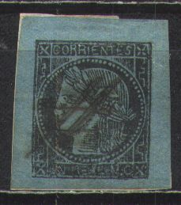
(reduced size)
1 r black on blue
This stamp exists with the value manually erased (used as 3 centavos):
(Reduced sizes)
(3 c) black on blue (3 c) black on green (3 c) black on yellow (3 c) black on lilac
Fiscal stamps:

Fiscal stamp
Eight different types exist of each of these stamps. A black on white stamp is a fiscal stamp (see picture). Reprints and forgeries also exist, which makes identifying these stamps quite complicated. From 1880 on Corrientes used the stamps of Argentine. Some of the above shown stamps could very well be forgeries too!
The stamps were printed in sheets where the blocks of eight types were repeated at some distance.
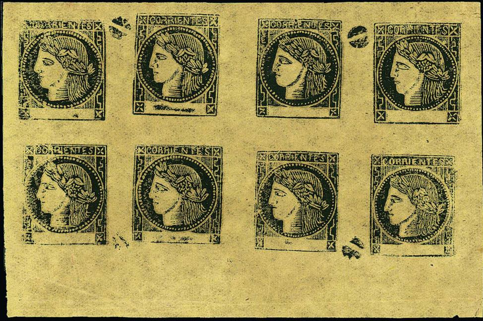
Either a genuine sheet or a reprint with the eight types.

(Type 1)

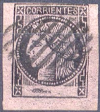
(Type 3)
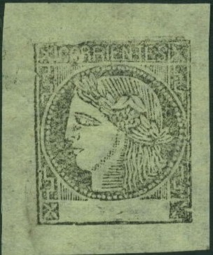
(Type 4; the word 'CORRIENTES' is larger than in the other types)
(Types 5 and 6)

(Type 6)

(Type 7)

(Type 8; lowest part of the left bottom ornamental vertical line
is double)
(Genuine stamps, reduced sizes)
Value of the stamps |
|||
vc = very common c = common * = not so common ** = uncommon |
*** = very uncommon R = rare RR = very rare RRR = extremely rare |
||
| Value | Unused | Used | Remarks |
| 1 Real M C balck on blue | RR | RR | |
| Value surcharged | RRR | RR | |
| (3 c) black on blue | R | R | |
| (3 c) black on green | RR | RR | |
| (3 c) black on yellow | R | R | |
| (3 c) black on lilac | R | R | |
Cancels
The cancels that I've heard of are:
1) Ellipse with dots (2 types?)
2) 'CORRIENTES' written in a arc
3) Ellipse consisting of slanting parallel lines
4) Circle consisting of parallel lines
5) 'CORREOS DE CORRIENTES' written in a circular way
6) Circular town cancels with town name and date
'CORRIENTES' written in an arc

Ellipse cancel consisting of parallel lines
Two towncancels, the first one consisting of a single circle with
a Maltese cross at the bottom. The second one has a double circle
and a normal cross at the bottom.

Reprint, type 2 with a bogus cancel.
Forgeries
Forgeries were made by Adrain Champion and Stich. Senf made some 'facsimiles' of these stamps.
Besides forgeries, private reprints were also made (with an altered inscription 'UN REAL M.C.'. At least five different reprints exist (the fifth one being issued in 1911 on yellowish pelure paper and no gum). If anybody posesses more information concerning these reprints, please contact me!

Reprint
(Forgeries, reduced sizes)


(Forgeries)
A forgery in the wrong colour (red):
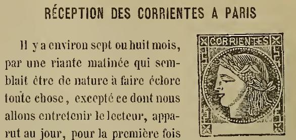
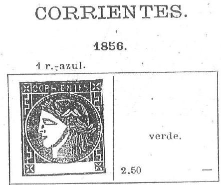


Some forgeries with a very weird face, also very large crosses in
the corners. Possibly made by Spiro, judging from the cancels.

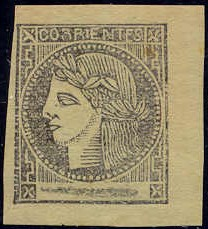


Reduced size
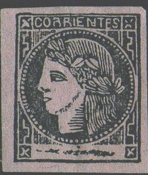
In the above two forgeries, the second "E" of
"CORRIENTES" is connected to the horizontal line below
it. There are also only two complete vertical lines in the upper
right triangle.
A whole sheet of these forgeries.
It seems that these dogface forgeries were made in Hamburg, Germany (possibly by the Spiro brothers?). Besides the typical 'dogface', these forgeries can also be identified by the bottom part of the "N" of "CORRIENTES:, which shows an extra line, such that it seems as if there is a small circle in the lower left corner of this letter.

A forgery made in 1911
Senf made a forgeries of all 8 types of these stamps. They were distributed with stamp journal the 'Illustrierten Briefmarken Journal' as an 'art supplement' or 'Kunstbeigabe'. These forgeries always bear the word 'FACSIMILE' at the bottom.

Another Senf forgery with 'FALSCH' written in the blue background
at the bottom.

Forgery with red dotted cancel.

Three forgeries in different background colors, all made by the
same forger.
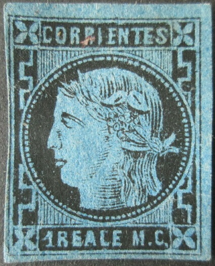
Forgery with inscription "1 REALE M.C."


Other forgeries.
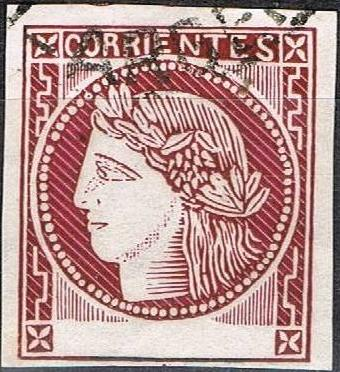
Forgeries cut from commemorative stamps of 1956.
'El Sello de Corrientes' by Dr. Leonardo Lowey (in Spanish),
136 pages.
'Corrientes Selecciones Filatelicas Tomo 17' by Sociedad
Filatelica Argentina Asociacion Filatelica de la Republica
Argentina Fusionados, 103 pages.
(Fiscal stamp, inscription 'PROVINCIA DE CORRIENTES')
In this and similar designs exist: 1 c, 2 c, 3 c, 5 c, 7 c, 9 c (all in the same design and color green, with person in ellipse), 10 c, 20 c, 30 c, 50 c, 70 c, 90 c (all in same design and color dark brown or red-brown with person in ellipse), 1 P, 2 P, 3 P, 5 P, 7 P and 9 P (all in same design and color red with person in circle). All stamps have a very wide margin.

In this design exist the values: 20 c violet, 25 c green, 50 c blue, 1 P red, 2 P brown, 3 P violet, 4 P green, 5 P blue, 6 P red, 7 P brown, 8 P green, 9 P blue and 10 P red. Some stamps were perforated 'c.95' as in the stamp above.
In 1897 and 1904 two new series of fiscal stamps were issued (sorry, no pictures available yet).
Entre-Rios only issued one telegraph stamp in 1898. The inscription reads: 'TELEGRAFO PROVINCIA DE ETNRE RIOS'.

10 c brown
This stamp has perforation 11 1/2.
Value of the stamps |
|||
vc = very common c = common * = not so common ** = uncommon |
*** = very uncommon R = rare RR = very rare RRR = extremely rare |
||
| Value | Unused | Used | Remarks |
| 10 c | ** | ** | |

10 c red
This stamp was issued by the Romanian Julius (Iuliu) Popper (1857-1893), to transport letters from gold mining camps in Tierra del Fuego to Puntas Arenas in Chili. The letter 'P' on the stamp refers to Popper.
I've seen an 'essay' in black with a red circular cancel.
These stamps were printed in sheets of 100 (10x10 stamps) and
can be plated in twelve types. The types have the following
characteristics:
Type 1: dot in front on "D" of "DIEZ"
Type 2: dot in "C" of "CENTAVOS"
Type 3: dot under upper left "1"
Type 4: dot in front of "O" of "ORO"
Type 5: dot in top part of second "R" of
"TIERRA" and dot halfway "DIEZ" and upper
"10".
Type 6: dot in upper part of hammer
Type 7: Two dots behind last "L" of "LOCAL";
scratch in the central part of the second "R" of
"TIERRA"
Type 8: Dot in star, dot on top of "D" of
"DE"
Type 9: ?
Type 10: Smudge in front part of hammer
Type 11: Scratch in pickaxe
Type 12: Scratch in bottom of "A" of
"CENTAVOS"


Most likely Types 3 and 7.
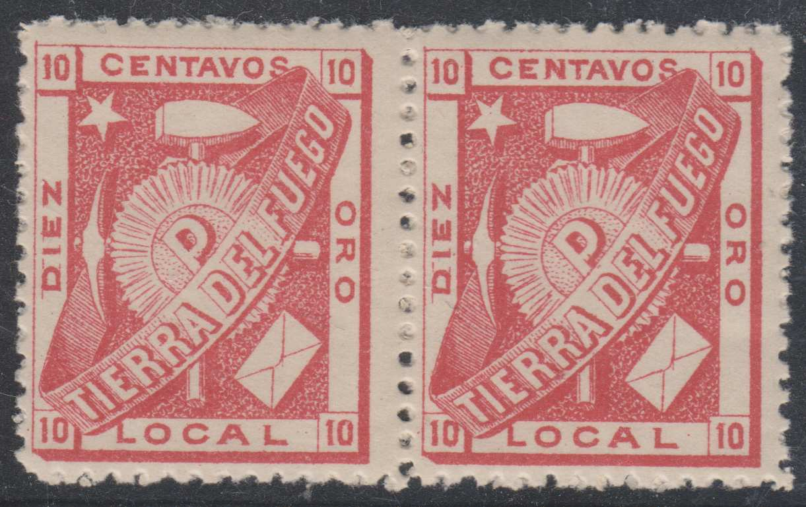
Types 7 and 8.

Types 10 and 8.
I've been told that reprints were made in 1890. If I'm well informed, they have better perforation than the genuine stamps. Although I have seen stamps offered as reprints with the 'bad' perforation.

A reprint
If I'm well informed, used stamps are very rare; some cancels exist with 'COLONIA POPPER', 'CARMEN SYLVA', 'PARAMO' and 'SAN SEBASTIAN' (all four cancels are circular cancels with the date in the center). Since Popper's stamps were not recognized by the Argentine government, additional stamps from Argentine had to be added.

{kind=link}
{kind=link}
{kind=link}
{kind=link}
{kind=link}
{kind=link}
{kind=link}
{kind=link}